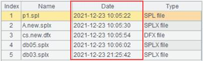

Search directory
On the application resource interface on the left of esProc IDE, we can search for the target file under the File Resource using the fuzzy search.
Right-click the resource tree and select ¡°Search directory¡±:

Enter ¡°new¡± in the search box, for example, we get the following results:

We can also double-click the column name to sort files under the file resource. To double-click Date column, for example, files are re-ordered as follows:
